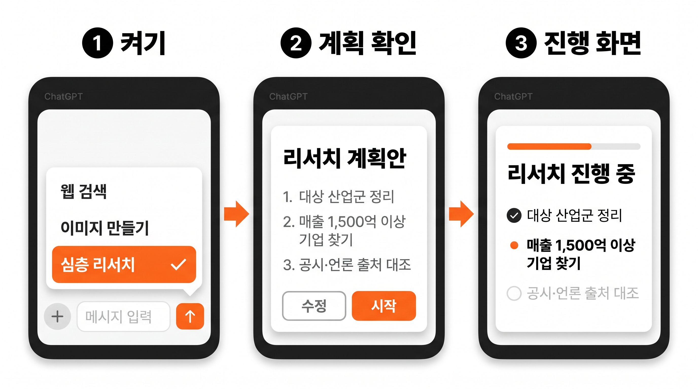
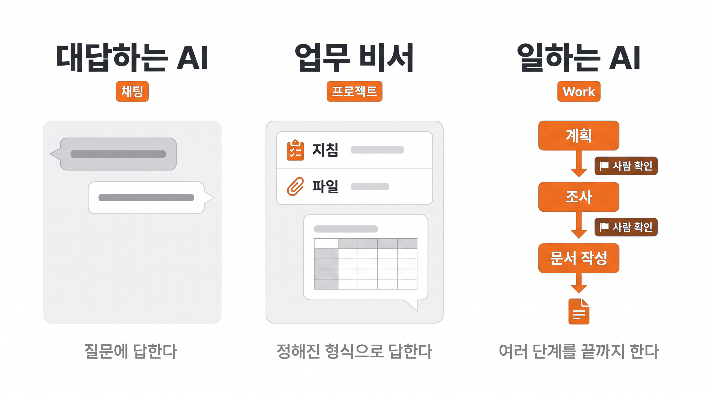

프롬프트 엔지니어링
영업 김대리가 받은 한 가지 미션을 함께 끝까지 완성합니다 — 회의록 · 이전 분기 보고서 · 외부 리서치 → 보고서 → 프로젝트 자산화.
오늘의 미션 : 김대리의 「신규 거래처 발굴 전략 보고서」회의록 · 이전 분기 보고서 · 외부 리서치를 합쳐 7섹션 보고서를 끝까지 완성합니다
0-1. 김대리의 미션
오늘 여러분은 영업본부 영업1팀 김대리입니다. 월요일 주간회의에서 다음 주 본부 회의에 가져갈 보고서를 맡았습니다. 그날 회의를 한 장으로 정리하면 이렇습니다.
다음 주 본부 회의에 가져갈 「신규 거래처 발굴 전략 보고서」 — 후보 거래처 3곳
- 매출3분기 본부 매출 목표 대비 -15%, 상위 5개 거래처 비중 72%
- 결정다음 분기부터 신규 거래처 발굴이 본부 KPI
챙기라고 한 세 가지
"이 세 개 핵심이야."— 박본부장
- 형식본부 양식 7섹션 — 작년 4분기 보고서와 같은 구조 · 문체
- 조건내부 매출 · 기존 거래처 정보는 외부 AI에 입력하지 않는다. 조사는 공개 자료로
- 담당김대리 (검토 이팀장)
- 이번 주외부 자료 조사 · 보고서 작성
- 다음 주 월이팀장 1차 검토
- 다음 주 화본부 회의 보고
회의 · 인물 · 회사 · 수치는 모두 교육용 가상 자료입니다.
쓸 자료는 세 가지이고, 만들 것은 보고서 한 부입니다.
- 회의록주간회의 녹음 변환본(STT)
- 이전 분기 보고서본부 양식 7섹션의 예시
- 후보 거래처 조사심층 리서치로 조사
엔지니어링
- 핵심 1 후보별 fit 평가
- 핵심 2 접근 전략
- 핵심 3 리스크와 대응
0-2. 끝까지 따라오면 이렇게 나옵니다 — 산출물 미리보기
아래 7섹션이 채워진 보고서가 남습니다. 섹션마다 재료가 정해져 있습니다.
| 보고서 섹션 | 무엇으로 채우나 | 재료가 오는 곳 |
|---|---|---|
| 1. 배경 및 목적 | 매출 부진 · 거래처 의존도 · 본부 KPI | 회의록 |
| 2. 후보 거래처 개요 | 후보 3곳 비교표 | PART 03에서 조사 |
| 3. 선정 기준 | 후보를 고른 기준 | 회의록 · 조사 결과 |
| 4. 후보별 상세 분석 — 핵심 1 | 후보별 회사 개요와 fit 평가 | 조사 결과 |
| 5. 접근 전략 — 핵심 2 | 컨택 순서 · 채널 · 첫 미팅 메시지 | 조사 결과 · 내 판단 |
| 6. 리스크 및 대응 — 핵심 3 | 후보별 리스크와 대응 방안 | 조사 결과 · 내 판단 |
| 7. 실행 일정 | 보고 뒤 주차별 할 일 | 회의록 · 내 판단 |
이전 분기 보고서는 내용이 아니라 모양(섹션 순서 · 문체 · 표)을 알려 주는 예시로 씁니다. 재료가 모이면 PART 06에서 근거 규칙을 걸고 본문을 씁니다. 보고서를 완성한 뒤에는 일한 방식을 남기고(PART 07), 프로젝트에 담아 다음 분기에는 한 줄로 부릅니다(PART 08).
평범한 입력은 평범한 출력을 만든다평소처럼 한 줄로 시켜 봅니다 — 어디서 막히는지 직접 확인합니다
1-1. 평범한 입력의 한계 — 김대리의 첫 시도
회의를 마치고 자리에 돌아온 김대리는 평소처럼 ChatGPT를 열고 한 줄로 시킵니다. 여러분도 지금 ChatGPT를 열고 이 한 줄을 그대로 입력해 보세요. 결과 창은 닫지 말고 둡니다 — PART 02에서 기본원칙을 적용한 결과와 나란히 비교합니다.
그럴듯하지만 본부 회의에 바로 가져가기는 어려운 일반론이 나옵니다. 이 한 줄에는 AI가 추측으로 채워야 하는 빈칸이 네 개 있기 때문입니다.
빈칸 1무엇을 해 달라는 건가
'전략 보고서'가 목차인지 완성본인지, 후보를 몇 곳 찾으라는 건지 정하지 않았습니다. 범위를 AI가 알아서 정합니다.
빈칸 2누가, 왜 쓰는가
본부 회의 보고용이라는 것도, 박본부장이 챙기라고 한 세 가지(fit · 접근 · 리스크)도 모릅니다. 톤과 깊이가 평균치로 맞춰지고 정작 중요한 것이 빠집니다.
빈칸 3무엇을 근거로 쓰는가
회의록도, 후보 거래처에 대한 조사 자료도 주지 않았습니다. 일반 지식으로 채웁니다.
빈칸 4어떤 모양으로 내놓는가
본부 7섹션 양식 · 분량 · 표 구성을 모릅니다. 매번 다른 모양으로 나옵니다.
AI 성능이 아니라 우리가 평범하게 시켰기 때문입니다
프롬프트의 기본원칙 : 지시문 + 맥락 + 자료 + 출력 형식이 기본기로 김대리의 보고서 1차 구성안까지 만듭니다
2-1. 프롬프트의 기본원칙 — 적어도 이 네 가지
PART 01의 네 빈칸을 직접 채워 주는 것이 프롬프트의 기본입니다. 어떤 요청이든 적어도 이 네 가지는 넣어 줍니다.
만들 것과 범위를 한 문장으로
목적 · 판단 기준 · 하지 말 것
근거가 되는 자료와 따라 쓸 예시
구조 · 분량 · 표
네 가지는 입력창 안에 이렇게 놓입니다.
2-2. 같은 AI, 다른 입력 — 결과가 어떻게 달라지나
같은 AI에게 같은 보고서를 시켜도 입력이 다르면 결과가 달라집니다. PART 01의 한 줄과 기본원칙 네 가지를 채운 입력을 나란히 놓으면 이렇습니다.
- 일반론 (시장 분석 → 잠재 고객 발굴)
- 박본부장 핵심 세 가지 없음
- 근거를 알 수 없는 회사와 숫자
- 본부 양식과 다른 구조
- 본부 회의에 그대로 가져갈 수 없음
- 본부 7섹션 양식 그대로
- 핵심 세 가지가 4 · 5 · 6섹션에 배치
- 모르는 후보는 지어내지 않고 자리만 비워 둠
- 배경 수치와 보고 일정이 회의록대로
- 다음에 채울 자료가 보이는 구성안
2-3. 실습 — 기본원칙으로 보고서 1차 구성안 만들기
PART 01의 결과 창은 그대로 두고 브라우저 새 탭에서 새 채팅을 엽니다. 자료 두 개를 내려받아 첨부한 뒤 PROMPT 2를 입력합니다. 회의록은 정리하지 않고 그대로 첨부합니다 — 보고서에 필요한 맥락이 그 안에 있습니다. 실습 자료는 가상입니다. 실제 업무에서는 회사 보안 기준에 따라 내부 수치와 거래처 이름을 가린 뒤 올립니다.
회의 전체가 담긴 녹음 변환 텍스트. 박본부장의 지시 배경 · 핵심 세 가지 · 보고 일정 · 보안 조건이 들어 있습니다.
작년 4분기에 같은 양식으로 쓴 보고서. 7섹션 구조 · 문체 · 표가 담긴 AI가 따라 쓸 예시입니다.
결과가 나오면 PART 01의 결과 창과 나란히 놓고 비교합니다.
신규 거래처 발굴
전략 보고서 — 1차 구성안
매출 -15%와 상위 거래처 72% 의존을 풀기 위해 신규 후보 3곳을 fit · 접근 · 리스크 세 관점으로 정리해, 본부 회의에서 어느 후보부터 컨택할지 바로 정할 수 있게 한다.
- 2026년 3분기 본부 매출 목표 대비 -15%, 전년 동기 대비 -7%
- 상위 5개 거래처 매출 비중 72% → 다음 분기부터 신규 거래처 발굴이 본부 KPI
- 후보 1 · 2 · 3을 한 표로 비교 (회사명 · 산업 · 매출 규모 · 우선순위) 자료 필요: 후보 거래처 조사
- 후보를 고른 기준과 박본부장 핵심 세 가지의 관계
- 후보별 회사 개요와 fit 평가 자료 필요: 후보 거래처 조사
- 컨택 순서 · 채널 · 첫 미팅 메시지 자료 필요: 후보 거래처 조사
- 후보별 리스크와 대응 방안 자료 필요: 후보 거래처 조사
- 이팀장 1차 검토(다음 주 월요일) · 본부 회의 보고(다음 주 화요일) 뒤 주차별 일정
구성안의 빈자리는 모두 한 가지를 가리킵니다 — 후보 거래처 조사입니다. 회의록과 이전 분기 보고서는 손에 있고, 후보 거래처 정보만 없습니다. PART 03에서 심층 리서치로 채웁니다.
7섹션이 모두 채워진 보고서의 완성 예시입니다. PART 03부터 PART 06까지 채워 가는 흐름의 도착점입니다. 내 결과물과 비교하면서 톤 · 구조 · 표의 기준으로 씁니다.
이 네 가지가 오늘 하루의 뼈대입니다
심층 리서치로 후보 거래처 3곳을 발굴한다1차 구성안에서 비워둔 자리를 본문 데이터로 채웁니다
PART 02에서 만든 1차 구성안에는 후보 거래처 자리가 비어 있었습니다. 하나하나 검색해 채우려면 시간이 꽤 드는 일입니다. 이번 PART에서는 이 조사를 ChatGPT의 심층 리서치(Deep Research)에 맡깁니다. 다만 결과를 확인 없이 본부 회의 보고서에 넣을 수는 없습니다. 그래서 여기서부터 보고서를 완성할 때까지 꿰는 원칙은 하나입니다 — 맡기되, 쥔다. 이번 PART에서는 조사는 맡기고, 검수는 내가 합니다.
3-1. 조사를 '맡기는' 기능 — 검색과 무엇이 다른가
검색은 질문 하나에 요약 하나를 바로 돌려줍니다. 심층 리서치는 다릅니다 — 조사 담당자에게 보고서를 의뢰하는 것에 가깝습니다. 의뢰를 받으면 아래 순서로 일합니다.
검색과 나란히 놓으면 언제 무엇을 쓸지가 분명해집니다.
| 검색 | 심층 리서치 | |
|---|---|---|
| 받는 것 | 링크가 달린 짧은 요약 | 출처가 달린 상세한 보고서 |
| 언제 쓰나 | 빠른 사실 확인 | 깊이 있고 철저한 조사 |
| 김대리라면 | "○○정공의 작년 매출은 얼마인가?" | "우리 부품군에 맞는 매출 1,500억 원 이상 제조사 후보 3곳은?" |
'받는 것' · '언제 쓰나'의 기준 출처: OpenAI 도움말 「ChatGPT의 심층 리서치」, 2026
영업이라면 후보 거래처 발굴 · 경쟁사 비교 · 업계 동향 조사가 심층 리서치 몫입니다.
3-2. 의뢰서를 쓰고, 계획을 확인하고, 맡긴다
의뢰서도 기본원칙 네 가지 그대로입니다. [맥락]에는 조사 범위와 후보 조건을, [자료]에는 어떤 출처를 볼지를 적습니다. 복사해 보내기 전에, 아래 1단계대로 새 채팅에서 심층 리서치부터 켭니다.

- 켜기 — 새 채팅을 열고, 입력창의 도구 메뉴(+)에서 심층 리서치를 고릅니다(입력창에
/Deepresearch를 입력해도 됩니다). PROMPT 3을 붙여 넣고 보냅니다. 메뉴에 심층 리서치가 없으면 실행은 건너뛰고 3-4의 결과 파일로 이어 갑니다. - 계획 확인 — 되묻는 질문이 오면 "의뢰서에 적은 대로 진행해 주세요"라고 답합니다. 제안된 리서치 계획안에 의뢰서의 네 가지 — 후보 3곳, 대상 산업과 매출 기준, 출처 조건(공시 · 공공 자료 · 주요 언론), 출력 형식(요약 · 비교표 · 후보별 상세 · 추천 순서) — 가 들어 있는지 보고, 빠진 것만 고친 뒤 시작합니다.
- 진행 화면 — 진행 상황이 뜨면 기다리지 않고 넘어갑니다. 같은 의뢰서로 미리 실행해 받은 결과 파일이 3-4에 있습니다. 내 리서치가 끝나면 그 결과와 견주어 봅니다.
3-3. 결과를 믿기 전에
아닙니다. 심층 리서치도 틀립니다. 그래서 검수는 사람 몫입니다.
웹에서 답을 찾아내야 하는 질문 1,266개로 잰 시험에서, 최신 AI도 10개 중 1~2개는 정답에 이르지 못했습니다.
OpenAI가 공개한 자체 시험에서도 최신 모델의 사실 오류는 크게 줄었지만 0이 되지는 않았습니다. OpenAI 도움말도 심층 리서치 결과에 출처를 다는 이유를 '정보를 검증할 수 있도록'이라고 설명합니다.
결과에 섞일 수 있는 대표적인 패턴은 세 가지입니다.
3-4. 결과 검수 — 의뢰한 대로 왔는지, 핵심 수치 2개
아래 파일은 PROMPT 3을 그대로 넣어 실제 심층 리서치로 받은 보고서입니다. 내려받아 열고 세 가지를 봅니다.
같은 의뢰서로 미리 실행해 Markdown으로 받은 심층 리서치 보고서입니다. 기다리지 않고 이 파일로 이어 갑니다.
- 의뢰한 대로 왔는가 — 의뢰서의 출력 형식 네 가지(요약 3줄 · 후보 비교표 · 후보별 상세 · 추천 우선순위)가 모두 있는지 봅니다.
- 회사가 실제로 있는가 — 후보 3곳의 회사 이름을 DART나 회사 홈페이지에서 찾아봅니다.
- 핵심 수치 2개 — 보고서에 쓸 숫자 두 개(예: 1 · 2순위 후보의 2025년 매출)를 골라, 출처에 적힌 자료를 찾아 열고 3-3의 방법대로 수치 · 날짜를 대조합니다. 이 파일에는 출처 이름과 날짜만 있고 링크는 없습니다 — 사업보고서는 DART(전자공시)에서 회사 이름으로 찾습니다.
내 채팅에서 리서치가 끝났다면 화면의 목차 · 사용한 출처 · 진행 기록에서 같은 것을 확인하고, Markdown · Word · PDF로 내려받을 수 있습니다. 의뢰서에서 [사실]과 [해석], 요약과 상세를 나눠 받은 이유는 쓰임이 다르기 때문입니다. 본부 회의에서 가장 위험한 것은 AI의 추정이 사실처럼 섞이는 것입니다.
| 구분 | 무엇 | 어떻게 쓰나 |
|---|---|---|
| [사실] | 출처 · 날짜가 달린 내용 | 출처를 열어 확인한 뒤 보고서에 인용 |
| [해석] | AI가 사실을 엮어 낸 추정 · 추천 | 내 판단으로 고르고 고쳐서 씀. 사실처럼 쓰지 않음 |
| 보고용 요약 | 3줄 결론 | 보고서 맨 앞, 본부 회의에서 하는 첫마디 |
| 비교표 · 상세 | 후보별 근거 | 보고서 본문의 재료, 질문 대응 자료 |
- 1단계 (가장 높음): 공시 자료 (DART), 정부·공공기관 보고서, 학회 발표
- 2단계 (보통): 주요 언론사 기사, 신용평가사 보고서, 산업협회 정기 발간물
- 3단계 (낮음): 블로그·커뮤니티·개인 분석 글 → 보고서에 그대로 인용 X
검수는 내가
받은 보고서를 읽고, 마크다운으로 정리합니다마크다운은 외우는 문법이 아니라 읽고 · 시키고 · 고치는 문법입니다
방금 받은 리서치 결과는 md 파일입니다. 길고, 다음 PART들에서 AI에게 다시 넘겨야 합니다. 이번 PART에서는 작성은 맡기고, 구조는 내가 정합니다. 4-1~4-3에서 이 파일의 형식을 읽는 법을 익히고, 4-4~4-5에서 다음 AI에 넘길 정리물로 다시 짭니다.
4-1. 이미 매일 보는 기호 — 마크다운이란
ChatGPT 답변의 제목 · 굵은 글씨 · 목록 · 표를 떠올려 보세요. 그 답을 복사해 메신저나 메모장에 붙이면 **, ## 같은 기호가 따라올 때가 있습니다. 그 기호가 마크다운입니다. 방금 받은 심층 리서치 보고서도 같은 기호로 짜여 있고, 아예 마크다운 파일(.md, 줄여서 md 파일)로 내려받을 수도 있습니다.
- 2025년 연결 매출: 3,106.93억 원
- 구매 품목이 우리 부품군과 겹침
마크다운은 #, -, ** 같은 기호 몇 개로 '여기는 제목, 여기는 목록, 여기는 강조'를 표시하는 글쓰기 약속입니다. 2004년에 공개된, 특정 회사 것이 아닌 공개 형식입니다. 한글 · 워드에서 마우스로 고르던 '제목 1 · 제목 2 · 글머리표 · 굵게'를 키보드 기호로 적은 것이라고 생각하면 됩니다.
| 기호 | 한글 · 워드에서는 | 예 |
|---|---|---|
# | 제목 1 (문서 제목) | # 후보 3곳 비교 |
## | 제목 2 (섹션) | ## 후보 2: 원익IPS |
- | 글머리표 | - 본사: 경기 평택 |
1. | 번호 매기기 | 1. 주성엔지니어링 |
**굵게** | 굵게 | **매출 21.6% 증가** |
| 표 | | 표 | | 항목 | 주성엔지니어링 | 원익IPS | |
#을 하나 더 붙이면(###) 한 단계 아래 제목이 됩니다.
4-2. 왜 구조를 표시하나 — 세 가지 이유
OpenAI는 최신 모델이 목록 · 표 · 마크다운으로 답하는 경향이 있다고 안내합니다. 읽을 줄 알면 받은 답을 다음 작업의 재료로 바로 씁니다.
같은 후보 3사 정보를 형식만 바꿔 쟀습니다. Cloudflare가 자사 블로그 글 한 편을 HTML에서 마크다운으로 바꿨을 때는 태그·스크립트가 빠지면서 토큰이 80% 줄었습니다.
줄글은 한 후보의 정보가 여러 문장에 섞여 있지만, 마크다운은 후보별 · 항목별로 칸이 나뉩니다. 그래서 섹션 하나만 가리켜 고치게 할 수 있습니다. 4-4에서 직접 해 봅니다.
4-3. 외우지 말고 — 읽고, 시키고, 고친다
쓰는 건 AI가 하고, 사람은 세 가지만 합니다.
1읽는다
보고서가 오면 제목 줄부터 훑어 뼈대를 봅니다. 화면에서는 목차와 소제목, md 파일 원문에서는 # · ## 줄입니다.
2시킨다
"후보별로 ## 섹션, 비교는 표로"처럼 구조를 정해 요청합니다.
3고친다
## 한 줄을 더하거나 순서를 바꾸고, "## 후보 2만 다시"처럼 부분만 다시 시킵니다.
**, ##가 거슬린다면 "기호 없이 문단으로 써 줘"라고 요청합니다. OpenAI는 줄글이 필요하면 그렇게 지정하라고 안내하고, Anthropic도 프롬프트의 서식이 답의 서식에 영향을 준다고 설명합니다.
출처: OpenAI 개발자 문서 「Using GPT-6」 · Anthropic 「Prompting best practices」, 2026
4-4. 실습 — 검수한 보고서를 마크다운으로 정리
심층 리서치 보고서도 마크다운 기호로 짜여 있고 비교표도 들어 있습니다. 하지만 본문이 길고, 표에 다 담기지 않은 fit · 접근 · 리스크 설명은 후보마다 긴 문단으로 풀려 있습니다. 다음 AI에 넘길 것은 후보별로 같은 항목만 골라 짧게 다시 짠 정리물입니다. 직접 쓰지 않고 AI에게 시킵니다. 새 채팅을 열어 3-4에서 받은 리서치 결과 파일을 첨부합니다. 내 채팅에서 리서치가 끝났다면 그 채팅에 이어서 해도 됩니다(입력창에 심층 리서치 표시가 남아 있으면 먼저 끕니다).
## 후보 1: 회사명 형태의 섹션으로 분리
- 섹션마다 같은 항목(회사 개요 · fit · 접근 · 리스크)으로 정리
- 후보 3사를 비교하는 표 1개 포함
- md 파일로 내려받을 수 있는 링크로 제공md 파일을 받으면 메모장으로 엽니다(더블클릭해 열 프로그램을 물으면 메모장을 고릅니다). 제목 줄만 훑어 후보 3곳이 각각 섹션으로 나뉘었는지 봅니다(4-3의 읽는다). 기호가 그대로 보이면 ## 줄을, 서식이 입혀져 보이면 굵은 소제목을 찾습니다. 고칠 곳이 보이면 같은 채팅에서 그 칸만 가리켜 다시 시킵니다(고친다).
## 후보 2 섹션의 리스크만 '리스크 | 근거' 두 칸짜리 표로 바꿔줘. 근거는 리서치 결과에 적힌 것만 쓰고, 다른 섹션은 그대로 둔 채 고친 md 파일을 다시 다운로드 링크로 줘.완성한 md 파일은 내려받아 둡니다. 링크가 열리지 않으면 "정리물 전체를 코드 블록으로 보여 줘"라고 한 뒤, 복사해 메모장에 붙여 저장합니다.
4-5. 자료 패키지 — 한 번 정리해 계속 쓴다
방금 만든 md는 한 번 쓰고 끝나지 않습니다. PART 05에서는 마스터프롬프트의 재료, PART 06에서는 보고서 본문의 재료, PART 08에서는 프로젝트의 파일이 됩니다. 그래서 회의록(원본) + 이전 분기 보고서(예시) + 리서치 정리물(마크다운) 3종을 한 폴더에 모아 둡니다.
최종 문서가 한글 · 워드여도 괜찮습니다. 마크다운은 AI와 주고받는 중간 형식이고, 최종 보고서는 PART 06에서 워드로 옮깁니다. 붙였을 때 **, ##가 남으면 4-3처럼 기호 없이 써 달라고 하면 됩니다.
구조는 내가
프롬프트를 쓰지 말고, 만들어 달라고 요청합니다최소 입력만 던지면 AI가 맥락을 보강해 구조화된 마스터프롬프트로 정리해줍니다
5-1. 프롬프트 작성이 어려운 이유 — 가장 쉬운 해법
PART 02 · 03 · 04를 거치면서 김대리는 프롬프트를 여러 번 작성했습니다. 그런데 실무자 입장에서 매번 네 가지(지시문 · 맥락 · 자료 · 출력 형식)를 다 채워 쓰는 건 부담스럽습니다. 다음 PART 보고서 본문 작성처럼 길고 복잡한 작업이면 더 그렇습니다. 가장 쉬운 해법은 AI에게 "구조화된 프롬프트를 만들어달라"고 요청하는 것입니다.
▸ 빠뜨린 항목 누락 위험
▸ 분량 길어지면 부담
▸ 다른 작업으로 재사용 어려움
▸ AI가 맥락 자동 보강
▸
(AI 보강) 표시로 추적▸ 다음 작업에 그대로 재사용
5-2. 실습 — 최소 입력으로 마스터프롬프트 요청
새 채팅을 열고 자료 패키지 3종(회의록 · 이전 분기 보고서 · 리서치 정리물 md)을 모두 첨부한 뒤 PROMPT 5를 입력합니다. 요청 한 줄과 맥락 몇 줄이면 충분합니다.
# 큰 섹션 → ## 하위 항목 구조의 마크다운으로 정리
2. 내가 빠뜨린 맥락(작성 톤, 출력 형식, 검증 기준 등)은 영업 보고서 통상에 맞춰 보강
3. 보강한 항목 뒤에 (AI 보강) 표시
4. 내가 채워야 할 부분은 [채워주세요] 빈칸으로5-3. AI가 만들어 준 마스터프롬프트 — 결과 예시
AI는 김대리가 던진 최소 정보를 정리하면서, 빠뜨린 맥락을 영업 보고서 통상에 맞춰 자동으로 보강해줍니다. (AI 보강) 표시로 어디가 AI가 더한 부분인지 명확히 보입니다. 이 결과를 검토하고 고쳐서 내 마스터프롬프트로 확정합니다. 빈칸([채워주세요])은 같은 채팅에서 답을 주거나 지워 달라고 한 뒤, 확정본을 md 파일로 내려받아 둡니다 — PART 08에서 프로젝트 지침에 넣습니다.
만들어 달라고 요청하는 것이 가장 실용적입니다
근거 규칙을 걸고 보고서를 씁니다자료 패키지로 7섹션 보고서를 쓰게 하고, 근거를 대조한 뒤 고칠 섹션만 다시 시킵니다
지금 채팅에는 마스터프롬프트와 자료 세 개가 올라와 있습니다. 쓰는 일은 AI에게 맡길 수 있습니다. 남는 문제는 하나입니다 — 이 문장이 어느 자료의 어디에서 왔는가. 이번 PART에서는 쓰기는 맡기고, 근거는 내가 쥡니다.
6-1. 자료가 여러 개일 때 — 근거를 달게 하는 세 가지 규칙
자료가 여러 개면 AI가 자료에 없는 내용을 그럴듯하게 섞거나, 어느 자료의 숫자인지 알 수 없게 쓸 수 있습니다. 예시로 준 이전 분기 보고서의 회사와 숫자가 딸려 들어오기도 합니다. 그래서 프롬프트의 [맥락]에 근거 규칙을 넣습니다. 근거가 달려 있으면 그 자리를 찾아 사람이 확인한 뒤 보고서에 남길 수 있습니다.
- 근거를 단다 — 문장 · 표의 칸마다 어디서 왔는지 붙이게 합니다. 회의록은 "(회의록 [00:01:02])"처럼 시각, 리서치 정리물은 출처 이름과 날짜입니다. 확인할 곳이 바로 보입니다.
- 없으면 없다고 쓴다 — 자료에 없는 내용은 "자료에 없음"으로 쓰게 합니다. 빈칸을 추측으로 채우지 못하게 막는 규칙입니다.
- 사실과 해석을 나눈다 — 자료에 적힌 내용은 [사실], AI의 해석 · 제안은 [해석]으로 쓰게 합니다. 접근 전략과 리스크 대응은 대부분 [해석]입니다.
마스터프롬프트에 검증 기준이 들어 있더라도 자료가 늘어날수록 흘리기 쉬운 규칙입니다. 그래서 프롬프트에 다시 적고, 결과에서 지켰는지 대조합니다.
6-2. 실습 — 근거 규칙을 걸고 보고서 쓰기
PART 05에서 마스터프롬프트를 만든 그 채팅에서 그대로 이어 갑니다. 마스터프롬프트와 자료 패키지가 이미 올라와 있으므로, 근거 규칙을 걸어 7섹션을 한 번에 쓰게 합니다. 이 분량(워드로 예닐곱 쪽)은 한 번에 받아도 됩니다 — 수십 쪽짜리 문서라면 섹션을 나눠 호출합니다.
##로 구분
- 7섹션 '실행 일정'의 보고 뒤 할 일은 자료에 없으니 표의 틀만 만들고 "[채워주세요]"로 비워 둔다6-3. 근거 대조 — 숫자 두 개, 그리고 "자료에 없음"
근거가 달려 있어도 그 근거가 맞는지는 열어 봐야 압니다. 전부 볼 필요는 없습니다. 보고서에서 가장 눈에 띌 숫자부터 봅니다.
- 회의록 숫자 — 1섹션의 -15%와 72%를 회의록에서 찾아 대조합니다. 근거에 적힌 시각([00:01:02] · [00:01:38])의 발언에 같은 숫자가 있어야 합니다.
- 리서치 숫자 — 2섹션 비교표에서 1순위 후보의 매출을 골라, 리서치 정리물에 적힌 출처를 PART 03에서 한 대로 열어 봅니다.
- 딸려 온 예시 — 이전 분기 보고서에 있던 회사 이름이나 숫자가 본문에 들어와 있지 않은지 봅니다.
그리고 AI가 "자료에 없음"을 제대로 쓰는지 한 번 시험합니다.
"없다"고 답하면 규칙이 지켜진 것입니다. 틀린 근거나 빠진 근거를 찾았다면 전체를 다시 받지 않고 그 섹션만 가리켜 다시 시킵니다 — PART 04에서 본 '고친다'입니다.
## 6. 리스크 및 대응 섹션만 다시 써 줘. 리스크마다 근거(출처 이름, 날짜)를 달고, 대응 방안은 [해석]으로 표시해 줘. 다른 섹션은 그대로 둬.6-4. 마무리 — 실행 일정을 채우고 워드로 옮긴다
7섹션 '실행 일정'의 보고 뒤 할 일은 어느 자료에도 없습니다. 주차별 할 일은 내가 정해 불러 줍니다. 아래는 예시입니다 — 내 계획으로 바꿔 넣어도 됩니다.
## 7. 실행 일정 표를 채워 줘. 다른 섹션은 그대로 둬.
- 보고 다음 주: 1순위 후보 1차 컨택 (담당 김대리)
- 그다음 2주: 1순위 후보 첫 미팅, 2순위 후보 1차 컨택
- 다음 달 말: 후보별 진행 결과를 정리해 본부에 보고내부 매출 금액이나 기존 거래처 이름처럼 외부 AI에 넣으면 안 되는 내용은 워드로 옮긴 뒤 직접 적습니다.
- 박본부장 핵심 세 가지(fit · 접근 · 리스크)가 후보 3곳 모두에 반영되었는가
- 본부 회의에서 어느 후보부터 컨택할지 정할 수 있게 우선순위와 근거가 보이는가
- 모든 숫자에 근거(회의록 시각 · 출처와 날짜)가 붙었는가
- [사실]과 [해석]이 구분되어 있는가
- 회의록에 나온 것 말고 내부 매출 금액 · 기존 거래처 이름이 본문에 들어가지 않았는가
검토가 끝나면 "전체를 하나로 이어 워드 파일(docx)로 만들어 줘"라고 하거나, 복사해 회사 양식 워드에 붙입니다. 붙였을 때 **, ##가 남으면 "기호 없이 문단으로 써 줘"라고 다시 요청합니다. PART 02에서 받은 완성 예시와 나란히 놓고 구조 · 근거 표기 · 사실과 해석의 구분을 비교합니다.
근거는 내가
보고서가 완성된 채팅 안에 내 작업 스타일이 다 들어있습니다한 번 더 요청하면 주제가 바뀌어도 그대로 쓸 수 있는 "내 스타일 마스터프롬프트"가 추출됩니다
7-1. 보고서가 끝난 순간, 채팅 안에는 무엇이 있는가
PART 06에서 김대리는 7섹션을 쓰게 하고, 근거를 대조하고, 고칠 섹션을 다시 시켰습니다. AI 입장에서 그 채팅창 안에는 김대리의 작업 흐름·톤·구조 선호·수정 기준이 모두 누적되어 있습니다. 이 정보를 그대로 흘려보내면 다음 보고서 작성에 다시 처음부터 시작해야 합니다. 한 번 더 요청해서 "내 스타일이 담긴 마스터프롬프트"로 추출합시다.
| PART 05 · 마스터프롬프트 | PART 07 · 내 스타일 마스터프롬프트 |
|---|---|
| 이번 「신규 거래처 발굴 보고서」 전용 | 주제가 바뀌어도 유지되는 내 작업 방식 |
| 자사 영업본부 맥락 · 박본부장 핵심 강조 3가지 · 7섹션 양식 | "근거를 달고 대조" 흐름 · "출처는 반드시 표기" 톤 · "결론 먼저 보이게" 구조 |
| 주제가 바뀌면 재사용 어려움 | 다른 보고서에도 그대로 적용 |
PART 05 마스터프롬프트가 "이번 보고서의 맥락"이라면, PART 07 내 스타일 마스터프롬프트는 "내가 일하는 방식"입니다. 둘 다 챙기면 다음 작업을 처음부터 다시 설명하지 않아도 됩니다.
7-2. 실습 — 내 스타일 마스터프롬프트 추출 요청
PART 06에서 보고서 7섹션을 완성한 그 채팅창 그대로에 다음 프롬프트를 입력합니다. AI는 채팅 안에 누적된 작업 흐름을 분석해 "내 스타일 마스터프롬프트"로 정리해줍니다.
[채워주세요] 빈칸으로
- md 파일로 내려받을 수 있는 링크로 제공AI가 추출한 내 스타일 마스터프롬프트는 다음과 같은 형태입니다. 주제 자리만 비워두고, 작업 흐름·톤·구조·검토 기준은 그대로 유지됩니다.
7-3. 주제가 바뀌어도 흐름은 유지 — 적용 시나리오
이 "내 스타일 마스터프롬프트"는 신규 거래처 발굴 외 다른 보고서에도 그대로 첫 호출로 쓸 수 있습니다. 빈칸만 채워서 던지면 동일한 작업 방식으로 진행됩니다.
적용 1분기 영업실적 분석
주제: "분기 영업실적 분석 보고서". 자료: 내부 수치를 가린 실적 요약·공개된 시장 동향. 같은 흐름(자료 정리 → 근거 규칙을 건 본문 작성).
적용 2경쟁사 동향 보고
주제: "경쟁사 신제품 대응 보고서". 자료: 경쟁사 발표·뉴스·자사 영향 분석. 같은 톤·구조로 진행.
적용 3고객 미팅 후속 제안서
주제: "고객 X 후속 제안서". 자료: 미팅록·고객 요구사항. 같은 검토 기준으로 작성.
내 작업 스타일이 거기 다 들어있습니다
오늘 만든 흐름을 프로젝트에 담아 둡니다마스터프롬프트와 자료 패키지를 프로젝트에 넣어 두면 다음 분기에는 한 줄 호출로 같은 보고서를 다시 만듭니다
8-1. 프로젝트란 무엇이고, 왜 담아 두는가
마스터프롬프트와 자료 패키지를 매번 다시 첨부하는 것은 비효율적입니다. 프로젝트는 ChatGPT 안에서 지침과 파일을 기억하는 업무별 작업 공간입니다. 마스터프롬프트를 지침에, 자료 패키지를 파일에 넣어 두면 다음 분기에는 새 자료만 첨부하고 한 줄로 부릅니다.

| 종류 | 무엇을 하나 | 오늘 쓰는 곳 |
|---|---|---|
| 채팅 | 질문에 답한다 | PART 01~07 |
| 프로젝트 | 지침 · 파일을 기억하고 정해진 형식으로 답한다 | 8-2 · 8-3 — 신규 거래처 발굴 비서 |
| Work | 계획 → 조사 → 문서 작성까지 여러 단계를 이어서 한다 | 8-4 — 사람이 확인할 지점 |
8-2. 실습 — 프로젝트 「신규 거래처 발굴 비서」 만들기
채울 곳은 세 군데입니다 — 이름, 지침, 파일. 오늘 만든 것을 옮겨 담으면 됩니다.
- 이름 — 왼쪽 사이드바에서 프로젝트 → 새 프로젝트를 누르고 이름을 「신규 거래처 발굴 비서」로 정합니다.
- 지침 — 프로젝트의 ••• → 프로젝트 설정에서 지침 칸에 PROMPT 8을 붙여 넣습니다. 그 아래에 PART 05의 마스터프롬프트와 PART 07의 내 스타일 마스터프롬프트를 이어 붙입니다.
- 파일 — 자료 패키지(회의록 · 이전 분기 보고서 · 리서치 정리물)와 오늘 완성한 보고서를 프로젝트 파일로 올립니다. 보고서를 끝까지 쓰지 못했다면 PART 02의 완성 예시(docx)를 대신 올립니다.
8-3. 다음 분기 활용 — 한 줄 호출
프로젝트가 만들어지면 다음 분기에는 같은 작업을 처음부터 다시 하지 않습니다. 프로젝트 안에서 새 채팅을 열고 새 자료만 첨부한 뒤 한 줄로 부릅니다. 오늘은 PART 03에서 받은 리서치 결과 파일을 '이번 분기 새 자료'라고 치고 첨부합니다.
이전 분기 보고서를 다시 첨부하지 않았는데도 같은 형식과 근거 표기가 나오면 비서가 제대로 만들어진 것입니다. 오늘 완성한 보고서를 올렸다면, 첨부한 자료가 그 보고서에 이미 반영된 것이라 맨 위 '바뀐 점'은 "없음"으로 나오는 것이 맞습니다. 완성 예시를 대신 올렸다면 후보가 달라 바뀐 점이 나옵니다. 프로젝트는 팀원과 공유할 수 있습니다 — 공유하면 팀원도 같은 지침 · 파일로 씁니다.
8-4. 일하는 AI — ChatGPT Work와 사람이 확인할 지점
Work는 ChatGPT의 '일하는 AI'입니다. 조사 → 정리 → 문서 작성처럼 여러 단계를 이어서 하고, 프로젝트 안에서 시작하면 그 프로젝트의 지침 · 파일을 씁니다. 데스크톱 앱에서 쓰고, 요금제에 따라 웹 · 모바일에서도 씁니다. Work를 쓸 수 있다면 프로젝트 안에서 아래 지시를 넣어 보고, 쓸 수 없다면 지시의 짜임만 봅니다.
여러 단계를 한 번에 맡길 때는 사람이 확인할 지점을 먼저 정해 둡니다.
| 언제 | 무엇을 확인하나 | 오늘 배운 곳 |
|---|---|---|
| 시작 전 | 계획이 의뢰한 범위 · 후보 조건 · 출처 조건과 맞는지 | PART 03 계획 확인 |
| 조사 후 | 후보 회사가 실제로 있는지, 핵심 수치 2개의 출처를 열어 원문 대조 | PART 03 검수 |
| 작성 후 | 표의 숫자를 원본 자료와 대조, [해석] 표시 확인 | PART 06 근거 대조 |
| 보내기 전 | 공유 · 발송 전에 내가 끝까지 읽고 승인 | — |
기준과 검수는 내가